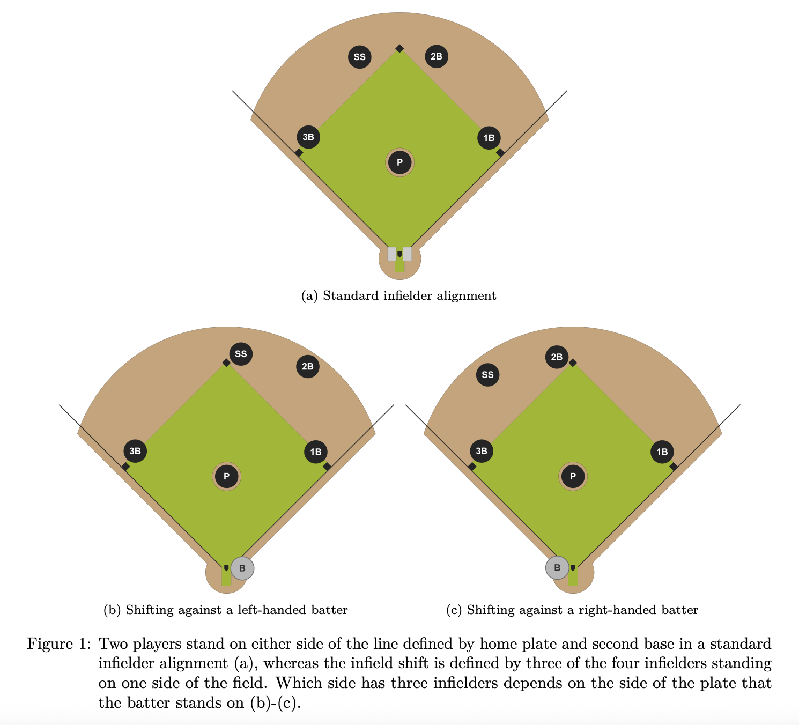
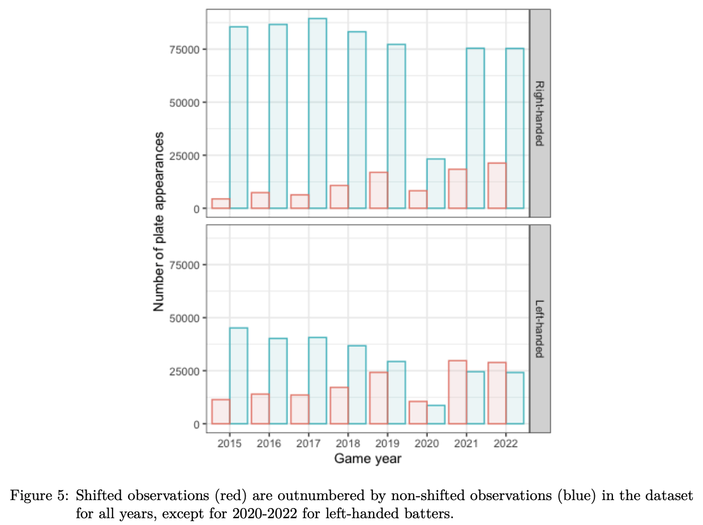
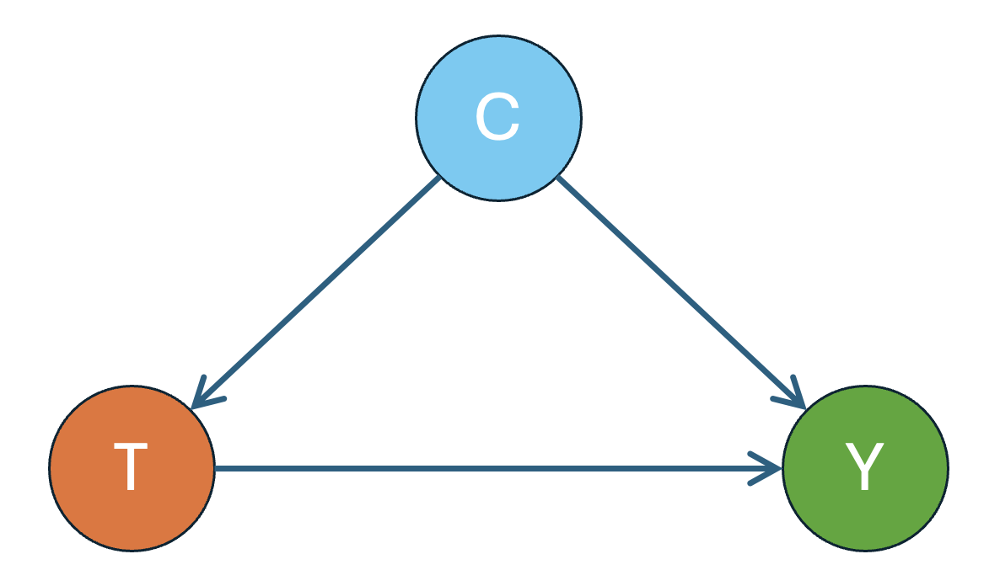

Causal Tools for Sports Analytics: Evaluating Defensive Strategies in MLB
CSAS Workshop
Ying Zhou
University of Connecticut
2026-04-10
Rogers Centre, home of the Toronto Blue Jays (Source: Wikimedia Commons)
This workshop introduces core ideas in causal inference through a sports analytics case study.
Our main example is the MLB infield shift. We will study how causal methods can be used to evaluate whether the shift actually suppresses offensive production.
Reference
Markes, S., Wang, L., Gronsbell, J., and Evans, K. Causal effect of the infield shift in the MLB arXiv:2409.03940
Learning Objectives
By the end of the workshop, participants will be able to:
Explain why evaluating the infield shift is a causal question rather than a purely descriptive one
Describe treatment, outcome, confounding, and effect modification in this setting
Understand the intuition behind matching and weighting
Interpret the main findings of the paper and the assumptions behind each method
Baseball in One Minute
Two teams, two roles
Offense: tries to score runs
Defense: tries to prevent runs
What happens on each play
The pitcher throws the ball
The batter tries to hit it
If the ball is put in play, the defense tries to get the batter out
How a team scores
A run is scored when a player safely advances around the bases and returns to home plate.
Why Positioning Matters
Hitters often tend to hit the ball toward certain parts of the field. So the defense may reposition its fielders before the pitch.
That is why defensive alignment matters.
In a standard alignment, there are two infielders on each side of second base.
In a infield shift, the defense moves three infielders to one side.
Teams do this because some batters tend to hit the ball more often to one side of the field.


Infield Shift: Background
The infield shift was not a small tactical tweak.
It became one of the defining features of modern MLB defense.
Teams increasingly overloaded one side of the infield
Shift usage roughly tripled from 2015 to 2022
In 2023, MLB restricted the shift by rule
The common belief was simple:
the shift was hurting offense.
But a belief is not the same as evidence.
Did the shift actually cause lower offensive production?
Formation of the Question
Treatment \(T\)
The treatment is fielding alignment:
\(\color{blue}{T = 1}\): shifted alignment
\(\color{blue}{T = 0}\): non-shifted alignment
The paper uses Statcast’s public fielding alignment variable and combines standard and strategic alignments into the non-shifted category.
Outcome \(Y\)
The outcome is scoring potential, measured through change in run expectancy. \[
\Delta RE = RE_\text{final} - RE_\text{initial} + \Delta score
\]
This Is Not Just an Association Question
Suppose the data show:
when teams use the shift, the batting team tends to score fewer expected runs.
In statistical terms, this means we might observe: \[E[Y \mid T = 1] < E[Y \mid T = 0]\]
We might even run a simple test, such as a t-test, and find a statistically significant difference between the average outcome in the treated group and untreated group.
It is tempting to say:
“The shift caused offense to go down.”
But that conclusion is too quick.
The Causal Question
The paper asks:
Has the infield shift been effective at causing suppression of expected runs when it has been deployed?
This is a causal question because we want to compare:
what happened when the shift was used
what would have happened in the same situation had the shift not been used
For a given plate appearance, we want to compare two possible worlds:
Shift: the defense uses the infield shift
No shift: the defense stays in a standard alignment
Potential Outcomes
\(\color{blue}{Y(1)}\): = the outcome if the defense shifts
\(\color{blue}{Y(0)}\): = the outcome if the defense does not shift
The individual causal effect for that plate appearance is \[\color{blue}{Y_i(1) - Y_i(0)}\]
The average treatment effect (ATE) is \[\color{blue}{E[Y(1)-Y(0)]}\]
The effect of treatment on the treated (ETT) is \[\color{blue}{E[Y(1)-Y(0)\mid T=1]}\]
The Fundamental Problem
For any single plate appearance, we only observe \(\color{red}{one}\) of these two outcomes: either the defense shifted, or it did not.
We never observe both for the same play.
Consistency assumption: \[
Y = TY(1) + (1-T)Y(0)
\]
To estimate ATE, \[\begin{align*}
\hat{E}[Y(1) - Y(0)] = \frac{1}{n}\sum_{i=1}^n[Y_i(1) - Y_i(0)]
\end{align*}\] But we don’t observe \(Y_i(1)-Y_i(0)\) for any \(i\), so we can’t calculate the average.
Why Randomized Trials are Ideal
\[
{E}[Y(1) - Y(0)] = {E}[Y(1)] - {E}[Y(0)]
\] Can we estimate \({E}[Y(1)]\) and \({E}[Y(0)]\) separately instead?
Imagine an experiment where, before each plate appearance, we randomly assign:
some plays to use the shift
some plays to use the standard alignment
In math, we have \(T\) is independent of any other variable, thus \[
T\perp Y(0), Y(1)
\]\(E[Y(t)] = E[Y(t)\mid T] = E[Y(t)\mid T=t] = E[Y\mid T=t]\)
Intuition Behind Randomized Trials
\[\hat{E}[Y(1) - Y(0)] = \hat{E}(Y\mid T=1) - \hat{E}(Y\mid T=0)\] ATE can be estimated by the difference between average outcomes in treated and untreated groups.
Wait a minute… We said earlier we could not simply comparing the average outcomes?
Here we can do this because of randomization.
By randomizing the treatment, the shifted and non-shifted groups would be comparable on average.
So a difference in average outcomes would have a natural causal interpretation.
What Happens in Reality?
In MLB, teams do \(\color{red}{not}\) randomize the shift.
They choose the shift on purpose, usually when they think it will help. This may depend on:
batter tendencies
pitcher characteristics
game situation
team preferences
So the shifted plays and the non-shifted plays are already different before the pitch is thrown.
A simple comparison may reflect both:
the true effect of the shift
the effect of the situation in which the shift was chosen
Confounding

treatment (T): fielding alignment
outcome (Y): scoring chance / expected runs
confounders (C): batter attributes, pitcher attributes, game context, etc
Assumptions on Confounding
For randomized trials, there is no confounder, because treatment \(T\) is independent of anything.
For observational studies, we assume \[
T\perp Y(0), Y(1) \mid C
\] and we observe all confounders.
Why Not Just Compare Exactly the Same Situations?
A natural idea is:
compare shifted and non-shifted plate appearances under exactly the same conditions
For example, we might try to match plays with the same:
batter, pitcher, count, baserunner situation, inning and score…
But this is often too restrictive.
Even with several MLB seasons of data, many exact combinations occur very rarely.
So if we insist on exact matching, we may be left with very little usable data.
Matching: Compare Similar Situations
A more practical idea
Instead of requiring plays to be identical, we look for plays that are similar in important observed characteristics.
Main idea
For each shifted plate appearance, find one or more non-shifted plate appearances that look similar in observed variables.
Then compare their outcomes.
In this setting, we might match on
batter attributes
pitcher attributes
game context
other observed pre-pitch information
Data Source
The paper uses publicly available MLB Statcast data from 2015 to 2022.
The data are pitch-level observations and include:
batter and pitcher identifiers
pre-pitch game context
fielding alignment
pitch characteristics
outcome-related information
This is observational data, not randomized experimental data.
Data Source (Simulated)
Because we do not use the real Statcast data here, we will illustrate the method using a simulated observational dataset with the same basic structure.
so that shifted and non-shifted plays become comparable overall.
How?
By assigning weights to each play.
This leads to Inverse Probability Weighting (IPW).
Inverse Probability Weighting (IPW)
Key intuition
Some plays are more likely to receive the shift than others.
For example:
strong pull hitters → more likely to be shifted
certain game situations → more likely to be shifted
This can be measured by the propensity score\[
P(T = 1\mid C)
\] Higher propensity score → more likely to be shifted
To make the treated/untreated groups more comparable, we
give the units in the treated group more weight if they are less likely to be treated,
and give the units in the untreated group more weight if they are more likely to be treated.
Result
After weighting, the two groups look more similar:
as if the shift had been assigned more randomly
Connection to matching
Matching: compare pairs of similar plays
IPW: adjust the whole dataset
IPW: Identification Formula
Under the assumption that \[
T \perp Y(0), Y(1) \mid C,
\] one can show \[\begin{align*}
E[Y(t)] = E\left[ \frac{\mathbb{I}(T=t)Y}{P(T=t\mid C)}\right]
\end{align*}\] Therefore,
to estimate \(E[Y(1)]\), we take the weighted average of outcomes in the treated group, where the weight is \(1/P(T=1\mid C)\)
to estimate \(E[Y(0)]\), we take the weighted average of outcomes in the untreated group, where the weight is \(1/P(T=0\mid C)\).
IPW: How the Estimation Works
Step 1: Estimate propensity score
For each play, estimate the propensity score \(P(T=1 \mid C)\)
We use a logistic regression model for the propensity score: